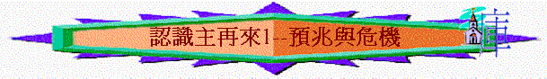
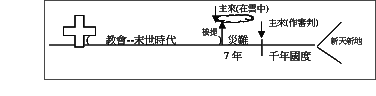

|
主 再 來 |
||
| 預 兆 與 危 機 | 被 提 與 災 難 | 國 度 與 永 恆 |
引言：何謂「末世」？現今的時代是否已是末世時代了？祂來臨前有甚麼先兆？對我們又有甚麼意義？
＊緒論
一.主再來的字眼
1.「末世」
「他們遭遇這些事，都要作為鑑戒；並且寫在經上，正是警戒我們這末世的人。」林前10:11
「如果這樣，他從創世以來，就必多次受苦了。但如今在這末世顯現一次，把自己獻為祭，好除掉罪。」來9:6
「你們的金銀都長了銹；那銹要證明你們的不是，又要吃你們的肉，如同火燒。你們在這末世只知積儹錢財。」雅5:3
〜從以上經文我們看出來不是今日的世代先叫「末世」，在使徒時代已是末世了！(即現今的年日也是末世)
〜末世的意思是指耶穌復活後，祂應許會再來，由教會建立至祂再來臨前已是末世，距離主來的日子及世界的末了已來越近了！
2.「主的日子」「主降臨」的時候
「人正說「平安穩妥」的時候，災禍忽然臨到他們，如同產難臨到懷胎的婦人一樣。他們絕不能逃脫。」帖前5:3
「耶穌在橄欖山上坐著，門徒暗暗的來說：「請告訴我們，什麼時候有這些事？你降臨和世界的末了有什麼預兆呢？」」太24:3
〜而到了世界盡頭的日子，真正的主角是主，所以是主的日子，祂要再降臨到世界
3.「耶和華的日子」「大而可畏之日」
「許多許多的人在斷定谷，因為耶和華的日子臨近斷定谷。」珥3:14
「「看哪，耶和華大而可畏之日未到以前，我必差遣先知以利亞到你們那裡去。他必使父親的心轉向兒女，兒女的心轉向父親，免得我來咒詛遍地。」」瑪4:5-6
〜舊約常用的字眼，通常指到復興以色列的時間，也指到將來神親自降臨在地上，審判列邦建立彌賽亞國度的日子。
4.「末期」「世界的末了」
「撒稗子的仇敵就是魔鬼；收割的時候就是世界的末了；收割的人就是天使。」太13:39
「你們也要聽見打仗和打仗的風聲，總不要驚慌；因為這些事是必須有的，只是末期還沒有到。」太24:6
〜原來主再來和世界的末了有關，主再來的時候，世界會終結，凡在世有形質的東西都會消失而改變
5.「天國近了」「天國」
「從那時候，耶穌就傳起道來，說：「天國近了，你們應當悔改！」」太4:17
「第七位天使吹號，天上就有大聲音說：世上的國成了我主和主基督的國；他要作王，直到永永遠遠。」啟11:15
〜主來臨的時候，也是在地上作王的時候，天國真正會在人間顯現出來。
二.主再來的前後
〜若根據太24、帖前4、啟示錄、主降臨前後時期與內容是：
末世時代(現今)->教會被提->七年災難->基督降臨->千年國度->新天新地

三.主再來的意義
1.對真神來說
〜神得榮耀的日子
「這聖靈是我們得基業的憑據（原文作質），直等到神之民（民：原文作產業）被贖，使他的榮耀得著稱讚。」弗1:14
「這正是主降臨、要在他聖徒的身上得榮耀，又在一切信的人身上顯為希奇的那日子。（我們對你們作的見證，你們也信了。）」帖後1:10
2.對信徒來說
A.得獎賞
「外邦發怒，你的忿怒也臨到了；審判死人的時候也到了。你的僕人眾先知和眾聖徒，凡敬畏你名的人，連大帶小得賞賜的時候也到了。你敗壞那些敗壞世界之人的時候也就到了。」啟11:18
B.得救贖
「不但如此，就是我們這有聖靈初結果子的，也是自己心裡歎息，等候得著兒子的名分，乃是我們的身體得贖。」羅8:23
「不要叫神的聖靈擔憂；你們原是受了他的印記，等候得贖的日子來到。」弗4:30
〜此「得贖」的意思，不單指靈魂的得救，也指整個因罪而有所軟弱的身體得贖，可以更新，得著榮耀，不會受罪轄制，不會有歎息、死亡的身子。
C.得見主
「以後我們這活著還存留的人必和他們一同被提到雲裡，在空中與主相遇。這樣，我們就要和主永遠同在。」帖前4:17
3.對以色列人來說
A.神為聖民伸冤的日子
「天哪，眾聖徒、眾使徒、眾先知啊，你們都要因他歡喜，因為神已經在他身上伸了你們的冤。」啟18:20
〜以色列人在末世時，會受列國的逼害，選民可能因為信仰的原因被殺，主再來的時候，神必為他們伸冤！
B.以色列得潔淨的日子
「為你本國之民和你聖城，已經定了七十個七。要止住罪過，除淨罪惡，贖盡罪孽，引進（或作：彰顯）永義，封住異象和預言，並膏至聖者（者：或作所）。」但9:24
〜在歷史及末世中，以色列人常犯罪得罪神，甚至將神的兒子----耶穌基督釘在十架中，在末後，主再來時帶來的大災難，是要令選民真正悔改、回轉歸向基督，得著永義。
C.神應許得應驗的日子
「我與你立約：你要作多國的父。從此以後，你的名不再叫亞伯蘭，要叫亞伯拉罕，因為我已立你作多國的父。我必使你的後裔極其繁多；國度從你而立，君王從你而出。我要與你並你世世代代的後裔堅立我的約，作永遠的約，是要作你和你後裔的神。我要將你現在寄居的地，就是迦南全地，賜給你和你的後裔永遠為業，我也必作他們的神。」創17:4-8
「你壽數滿足、與你列祖同睡的時候，我必使你的後裔接續你的位；我也必堅定他的國。他必為我的名建造殿宇；我必堅定他的國位，直到永遠。我要作他的父，他要作我的子；他若犯了罪，我必用人的杖責打他，用人的鞭責罰他。但我的慈愛仍不離開他，像離開在你面前所廢棄的掃羅一樣。你的家和你的國必在我（原文作你）面前永遠堅立。你的國位也必堅定，直到永遠。」撒下7:12-16
「因有一嬰孩為我們而生；有一子賜給我們。政權必擔在他的肩頭上；他名稱為「奇妙策士、全能的神、永在的父、和平的君」。他的政權與平安必加增無窮。他必在大衛的寶座上治理他的國，以公平公義使國堅定穩固，從今直到永遠。萬軍之耶和華的熱心必成就這事。」賽9:6-7
〜神曾對亞伯拉罕、大衛、以色列人立約，應許他們將來必有地土、國家、主權、更承諾有一王從大衛的後裔而生，祂必永遠坐在寶座中治理祂的國，但這些事要何時才真正應驗？是到了主降臨的日子，主要親自在選民在世上作王，以色列國成為萬國仰望的國度，那日就應驗了神對選民的諾言，也更証明神的應許是不會落空的。
4.對世人來說
A.遭審判的日子
「並且你們在大難之中，蒙了聖靈所賜的喜樂，領受真道就效法我們，也效法了主；甚至你們作了馬其頓和亞該亞所有信主之人的榜樣。因為主的道從你們那裡已經傳揚出來。你們向神的信心不但在馬其頓和亞該亞，就是在各處也都傳開了；所以不用我們說什麼話。因為他們自己已經報明我們是怎樣進到你們那裡，你們是怎樣離棄偶像，歸向神，要服事那又真又活的神，」帖前1:6-9
B.得回轉的機會
「口中所出來的火與煙並硫磺，這三樣災殺了人的三分之一。這馬的能力是在口裡和尾巴上；因這尾巴像蛇，並且有頭用以害人。其餘未曾被這些災所殺的人仍舊不悔改自己手所做的，還是去拜鬼魔和那些不能看、不能聽、不能走，金、銀、銅、木、石的偶像，」啟9:18-20
「我要使我那兩個見證人，穿著毛衣，傳道一千二百六十天。」他們就是那兩棵橄欖樹，兩個燈臺，立在世界之主面前的。」啟11:3-4
〜主降臨前的時候，末世必有大災難及神所差的兩位見證人在世傳道，目的是甚麼？是要叫世人知道末了的日子將到，可以仍有悔改的機會。
＊內容
一.預兆與危機
1.時間
A.對整體來說----不會知道
「耶穌在橄欖山上坐著，門徒暗暗的來說：「請告訴我們，什麼時候有這些事？你降臨和世界的末了有什麼預兆呢？」耶穌回答說：「你們要謹慎，免得有人迷惑你們。因為將來有好些人冒我的名來，說：『我是基督』，並且要迷惑許多人。你們也要聽見打仗和打仗的風聲，總不要驚慌；因為這些事是必須有的，只是末期還沒有到。」太24:3-6
〜我們可以有很多揣測，但主降臨的日子連天上使者也不知道，何況我們呢？
B.對世人來說----意想不到
「人正說「平安穩妥」的時候，災禍忽然臨到他們，如同產難臨到懷胎的婦人一樣。他們絕不能逃脫。弟兄們，你們卻不在黑暗裡，叫那日子臨到你們像賊一樣。」帖前5:3-4
〜對未信主的人來說，他們是活在黑暗的日子，像睡了的人一樣，賊來到，他們完全不知道，主降臨的日子一樣，他們正活在自以為平安穩妥的日子，主忽然的臨到，是他們意想不到的。
C.對信徒來說----可以警覺
「你們都是光明之子，都是白晝之子。我們不是屬黑夜的，也不是屬幽暗的。所以我們不要睡覺像別人一樣，總要警醒謹守。」帖前5:5-6
「耶穌在橄欖山上坐著，門徒暗暗的來說：「請告訴我們，什麼時候有這些事？你降臨和世界的末了有什麼預兆呢？」太24:3
「這樣，你們看見這一切的事，也該知道人子近了，正在門口了。」太24:33
〜世人活在黑暗沉睡中，但信徒卻不是，我們雖不知道那日臨到的真正時間，但們是光明之子，不是睡著的人，聖經有講及主的預兆，我們比世人更清楚那日子來臨的逼近，更比世人有警覺性的！
2.預兆
「耶穌出了聖殿，正走的時候，門徒進前來，把殿宇指給他看。耶穌對他們說：「你們不是看見這殿宇嗎？我實在告訴你們，將來在這裡沒有一塊石頭留在石頭上，不被拆毀了。」耶穌在橄欖山上坐著，門徒暗暗的來說：「請告訴我們，什麼時候有這些事？你降臨和世界的末了有什麼預兆呢？」」太24:1-3
〜我們是活在光明之中，從聖經中我們可看見主再來會發生的事，當這些事情越來越明顯出現時，我們就知道主降臨的日子也越來越近了！
A.世界的混亂
a.分散國度
「你既見像的腳和腳指頭，一半是窯匠的泥，一半是鐵，那國將來也必分開。你既見鐵與泥攙雜，那國也必有鐵的力量。那腳指頭，既是半鐵半泥，那國也必半強半弱。你既見鐵與泥攙雜，那國民也必與各種人攙雜，卻不能彼此相合，正如鐵與泥不能相合一樣。當那列王在位的時候，天上的神必另立一國，永不敗壞，也不歸別國的人，卻要打碎滅絕那一切國，這國必存到永遠。」但2:41-44
〜當主在地上另立一個永不敗壞之國前，世界的情景會是這樣。
(1)再不是帝國統治
〜以往有巴比倫、希臘、羅馬等帝國統治大部份世界，但當主來前的末世時代，羅馬帝國必瓦解，世界由多國多王管治了。
(2)半強半弱的能力
〜而列國不像以前的帝國擁有獨一無上的權威，反而是半弱半強(不及之前的世代了)
(3)不能夠彼此相合
〜沒有任何一個國家可以將世界相合來，像鐵與泥不相合一樣
b.戰爭連年
(1)國攻打國
「你們也要聽見打仗和打仗的風聲，總不要驚慌；因為這些事是必須有的，只是末期還沒有到。」太24:6
(2)民攻打民
B.自然的災禍
a.地震
「民要攻打民，國要攻打國；多處必有地震、饑荒。這都是災難（災難：原文作生產之難）的起頭。」可13:8
～1990年能測到的地震有16612宗
2003年己升至31363宗
b.飢荒
～據一項調查顯示，在1996年中，每天約有4萬人死於飢荒或相關疾病。
c.瘟疫
「地要大大震動，多處必有饑荒、瘟疫，又有可怕的異象和大神蹟從天上顯現。」路21:11
C.道德的下降
「只因不法的事增多，許多人的愛心才漸漸冷淡了。」太24:12
D.異端的興起
「耶穌說：「你們要謹慎，不要受迷惑；因為將來有好些人冒我的名來，說：『我是基督，』又說：『時候近了』，你們不要跟從他們！」路21:8
「我們的勸勉不是出於錯誤，不是出於污穢，也不是用詭詐。」帖後2:3
～異端將會出現，他們不單是指一人而是許多人在九十年代某一年，曾有德國佈道家指出該年有1,500人(或更多)指自己是基督。
〜不單有冒主名的異端興起，那日子來臨前，必有離道反教的事
E.福音的廣傳
「這天國的福音要傳遍天下，對萬民作見證，然後末期才來到。」
太24:14
F.宗教的逼害
「那時，人要把你們陷在患難裡，也要殺害你們；你們又要為我的名被萬民恨惡。那時，必有許多人跌倒，也要彼此陷害，彼此恨惡；」太24:9-10
G.世人的安穩
「當洪水以前的日子，人照常吃喝嫁娶，直到挪亞進方舟的那日；不知不覺洪水來了，把他們全都沖去。人子降臨也要這樣。」太24:38-39
「人正說「平安穩妥」的時候，災禍忽然臨到他們，如同產難臨到懷胎的婦人一樣。他們絕不能逃脫。」帖前5:3
〜雖然環境的氣氛會越來越差，但世人仍像洪水來臨前的世代一樣，仍照吃喝嫁娶，生活仍感到安穩及平安
3.危險
「你該知道，末世必有危險的日子來到。」提後3:1
〜主再來前，不單有很多自然的災福，對教會，對信徒也帶來很多危險的事情！
A.假師傅的混入
「有敬虔的外貌，卻背了敬虔的實意；這等人你要躲開。那偷進人家、牢籠無知婦女的，正是這等人。這些婦女擔負罪惡，被各樣的私慾引誘，」提後3:5-6
「從前在百姓中有假先知起來，將來在你們中間也必有假師傅，私自引進陷害人的異端，連買他們的主他們也不承認，自取速速的滅亡。」彼後2:1
「他們曾對你們說過，末世必有好譏誚的人隨從自己不敬虔的私慾而行。這就是那些引人結黨、屬乎血氣、沒有聖靈的人。」猶18-19
〜在末後的日子，聖經說「必有」假師傳，假信徒混入教會，可能很多人仍不知道，他們是偷進入來，引入離棄真道。
B.信徒們被迷惑
「那偷進人家、牢籠無知婦女的，正是這等人。這些婦女擔負罪惡，被各樣的私慾引誘，」提後3:6
「從前在百姓中有假先知起來，將來在你們中間也必有假師傅，私自引進陷害人的異端，連買他們的主他們也不承認，自取速速的滅亡。」彼後2:2
C.真道將受毀謗
「將有許多人隨從他們邪淫的行為，便叫真道因他們的緣故被毀謗。」彼後
2:2
4.回應
〜我們既知道以上的事情發生，信徒在世可有甚麼回應？
A.不要驚惶
「你們也要聽見打仗和打仗的風聲，總不要驚慌；因為這些事是必須有的，只是末期還沒有到。」太24:6
～信徒遇到這情景，聖經說：「不要驚慌」，因為這些事是必須有的，而即使我們被拉到公會面前受審，聖靈也會給我們口才面對
B.謹慎防備
「耶穌回答說：「你們要謹慎，免得有人迷惑你們。」太24:4
「我勸你們：無論有靈、有言語、有冒我名的書信，說主的日子現在（現在或作就）到了，不要輕易動心，也不要驚慌。」帖後2:2
C.忍耐到底
「惟有忍耐到底的，必然得救。」太24:13
D.儆醒等候
「但我們既然屬乎白晝，就應當謹守，把信和愛當作護心鏡遮胸，把得救的盼望當作頭盔戴上。因為神不是預定我們受刑，乃是預定我們藉著我們主耶穌基督得救。他替我們死，叫我們無論醒著、睡著，都與他同活。所以，你們該彼此勸慰，互相建立，正如你們素常所行的。」帖前5:8-11
E.追求聖潔
「好使你們當我們主耶穌同他眾聖徒來的時候，在我們父神面前，心裡堅固，成為聖潔，無可責備。」帖前3:13
〜有一日我們要見主，天父是聖潔的，祂也渴慕屬祂的人要聖潔，若我們要安然見神，我們也當追求聖潔。
F.裝備自己
「但我們既然屬乎白晝，就應當謹守，把信和愛當作護心鏡遮胸，把得救的盼望當作頭盔戴上。」帖前5:8
「親愛的弟兄啊，你們卻要在至聖的真道上造就自己，在聖靈裡禱告，保守自己常在神的愛中，仰望我們主耶穌基督的憐憫，直到永生。」猶20-21
〜末世有很多迷惑及危險的事情，信徒要站立得穩，需在屬靈的品德及真理上努力追求。
G.忠心作工
「這天國的福音要傳遍天下，對萬民作見證，然後末期才來到。」太24:14
「誰是忠心有見識的僕人，為主人所派，管理家裡的人，按時分糧給他們呢？」太24:45